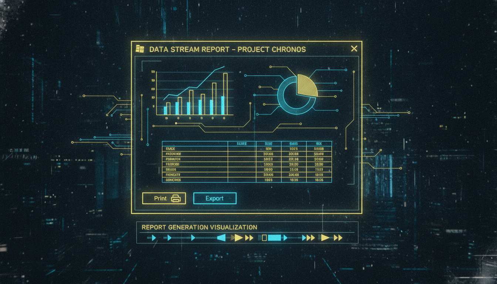

RDLC звіти, джерела даних, експорт

// Додавання ReportViewer
// (Потрібно встановити NuGet: Microsoft.Reporting.WinForms)
ReportViewer^ rv = gcnew ReportViewer();
rv->Dock = DockStyle::Fill;
rv->ProcessingMode = ProcessingMode::Local;
// Завантаження звіту
rv->LocalReport->ReportPath = "Reports\StudentReport.rdlc";
// Джерело даних
ReportDataSource^ rds = gcnew ReportDataSource();
rds->Name = "StudentDataSet";
rds->Value = ds->Tables["Students"];
rv->LocalReport->DataSources->Add(rds);
// Параметри
ReportParameter^ param = gcnew ReportParameter("ReportTitle",
"Список студентів");
rv->LocalReport->SetParameters(gcnew array<ReportParameter^> { param });
// Оновлення
rv->RefreshReport();
// Експорт
Warning^ warnings;
array<String^> streamids;
String^ mimeType;
String^ encoding;
String^ extension;
byte[] bytes = rv->LocalReport->Render("PDF", nullptr,
mimeType, encoding, extension, streamids, warnings);
File::WriteAllBytes("report.pdf", bytes);